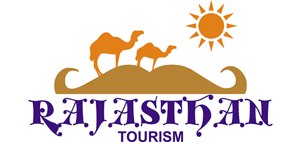

Welcome to Rajasthan
Adventure Tours in Rajasthan
Camping, Jeep safaris, horse safaris, wildlife safaris, hot air ballooning and camel safaris can be done to make adventure tours in Rajasthan what they are supposed to be.Adventure Activities Available in Rajasthan
1. Camping in Rajasthan
Camping in Rajasthan is available in proper tents or in magnificently envisioned and brought-to-life tree houses.
The Tree House
Location: The Tree House Resort is located outside the city of Jaipur, and can be reached after driving for about an hour on National Highway 8.
Accommodation: Categorised as Deluxe, Luxury and Private Nests, the tree houses here have two, four or five rooms, and amenities like attached baths, televisions, beverage makers, mini-bars and Wi-Fi internet.
Activities: The array of facilities and activities offered here are spa, swimming pool, lawn tennis, billiards, film screening, golf, camel safaris archery, volleyball, badminton, gym and birdwatching trips.
Rohetgarh Wilderness Camp
Location: The wilderness camp of Rohetgarh heritage hotel is located outside the city of Jodhpur.
Accommodation: Wilderness Camp Rohetgarh offers accommodation in six tents, set atop a sand dune. Polished teak furniture, beautiful jute rugs, canopies decorated with Rajasthani block prints and mosquito nets are features of all units. These tents also have bright lamps and attached bathrooms with western-style toilets.
Activities: You may sip alcoholic beverages in the open lounge, and avail Jeep safaris through the region. This camp also has a collection of horses, which it will readily give you rides on.
Know more about other popular options for Camping in Rajasthan.
2. Wildlife Safaris in Rajasthan
Ranthambore National Park is the prime place for taking adventure tours in Rajasthan if you want a good round of wildlife spotting.
Location:Ranthambore National Park is located in the far east of Rajasthan near its state border with Madhya Pradesh.
Terrain:Its terrain is mostly hilly as the Aravalli Range and the Western Ghats have their junction point here. Raj Bagh, Padam Talao, Malik Talao, the Chambal River and the West Banas River are important water resources here.
Flora:Lush grasses on the plateaus, velvety meadows on the valleys and dense woods along the rivers characterise the regional vegetation. Deciduous trees like jamun, khair, dhok, mahua, dates, banyans and mangoes grow here in plenty.
Fauna:Tigers are the most widely photographed and most significant beasts of Ranthambore National Park. Other than them, caracals, hyenas, leopards, hedgehogs, jungle cats, hares, civets, boars, deer, foxes, sloth bears, tortoises and turtles may also be sighted here.
Activities: You can take wildlife safaris through the national park and also visit Ranthambore Fort, which was first built in the 1st century.
Know more about other popular options forRajasthan Wildlife Safari Tours.
3. Hot Air Ballooning in Rajasthan
To relish hot air ballooning on your adventure tours in Rajasthan, you will have to come to Jaipur. Location and Accessibility: Jaipur is located in the eastern part of the state, and flights and trains to it are readily available from cities like Delhi and Mumbai.
Climate:The city has a semi arid climate, which means that though the weather here is generally hot and dry, Jaipur does get some rainfall. During the summer season, the maximum temperature often rises beyond 45 degree Celsius. Winters sometimes record minimum temperatures of as low as -2 degree Celsius. The city receives substantial amounts of rain during the monsoon months of July and August.
Attractions:Jantar Mantar, Hawa Mahal, Amber Fort, City Palace, Nahargarh Fort, Jaigarh Fort and Jal Mahal are all admired tourist attractions here.
Hot Air Ballooning in Jaipur: Hot air balloon rides in Jaipur are generally hosted near Amber Fort. You can either fly at 5:30 am or at 4:00 pm as per your wish. The balloon will fly for roughly an hour, and gearing up and inflating the balloon will take two hours more. On the flight, 6-7 more occupants will fly with you, and you will touch a maximum height of 1200 feet from the launching site. You will not be allowed on-board if you are pregnant, stand less than 1.5 metre in height, or are below the age of five. Being fit enough to stand during the entire flight is absolutely mandatory.
Know more about other popular options forHot Air Ballooning in Rajasthan.
4. Desert Safari in Rajasthan Jodhpur, Jaisalmer and Bikaner are the perfect places to combine the joys of adventure tours in Rajasthan and camel safaris.
Jodhpur: Lying near the banks of River Jojari in central Rajasthan, Jodhpur is a city replete with culture, history, architectural mastery and natural beauty. The winter season, which sees highs of 25 degree Celsius, is the perfect time to come here. Bikaner:Bikaner is a small town in the Thar Desert, located in north-western Rajasthan. As the heat in summers will be unbearable for you, come here in winters, which experience maximum temperatures of 23 degree Celsius. It is also a remarkable place to see numerous types of scavenging birds like vultures, eagles and buzzards.
Jaisalmer:The sand coloured walls of the buildings in Jaisalmer perfectly complement the natural surroundings of the town. Located in the heart of the Thar Desert in Western Rajasthan, Jaisalmer experiences scorching summers and cool winters.
Know more about other popular options forDesert Camel Safari in Rajasthan.